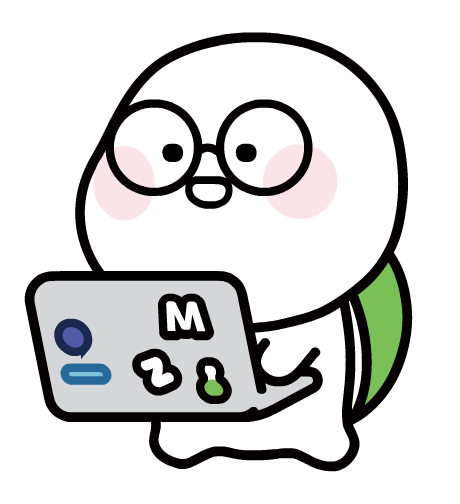

블럭의 박스 모델을 확인하자
안뇽 잘가
나는 컨텐츠 입니다.나는 컨텐츠 입니다.나는 컨텐츠 입니다.나는 컨텐츠 입니다.나는 컨텐츠 입니다.나는 컨텐츠 입니다.
block 요소는 기본 너비는 브라우저 너비(100%), 높이는 컨텐츠(auto)가 결정
html 컨텐츠는 라인개행(/n)을 무시한다. 공백이 있으면 공백도 무시
block의 높이를 지정하면 고정 크기로 바뀐다. so, 컨텐츠가 밖으로 나옴(overflow:visible)
overflow는 컨텐츠가 블럭을 벗어났을 때 어떻게 보일지 결정. ex)hidden, visible, scroll...
block은 박스모델의 contents, padding, border, margin을 갖는다.
박스모델의 contents의 기본값은 border를 포함하지 않는다.(너비 높이는 컨텐츠의 크기를 지정)
box-sizing은 대부분의 사람들이 border까지로 컨텐츠를 인식해서 등장
방향 단축
padding: A; → 모든방향 A
padding: A B; → 위아래A 좌우B
padding: A B C; → 위A 좌우B 아래C
padding: A B C D; → 위A 오른쪽B 아래C 왼쪽D ⇒ 시계방향

김혜지
풀스택 개발자
hyedii_9@naver.com